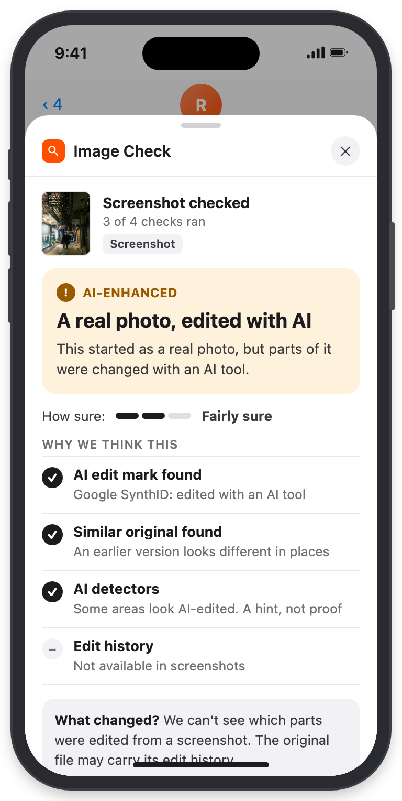
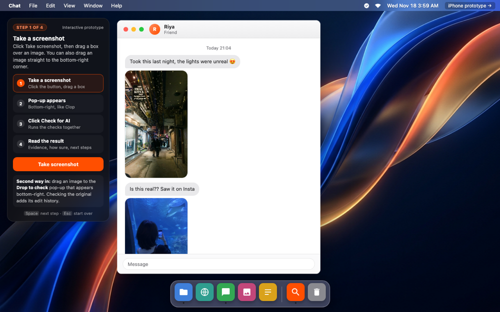

Check any image in one tap, see the evidence, and decide for yourself. Two clickable prototypes of the same feature: one for phone, one for laptop.

Take a screenshot with the side button, tap the thumbnail, then tap Check for AI. Or share the original image to Image Check.
Open the iPhone prototype →
Click Take screenshot and drag a box over an image, then click Check for AI. Or drag an image onto the pop-up in the corner.
Best on a laptop or desktop screen Open the laptop prototype →A screenshot (fast, but loses edit history) or the original file (adds edit history, so the result can say more).
The checks are simulated. The prototypes show how results, evidence and uncertainty are explained.